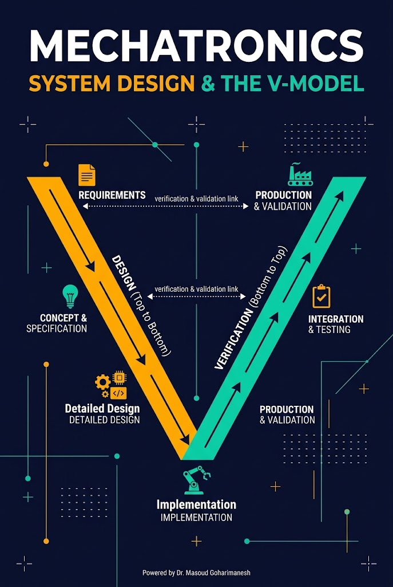
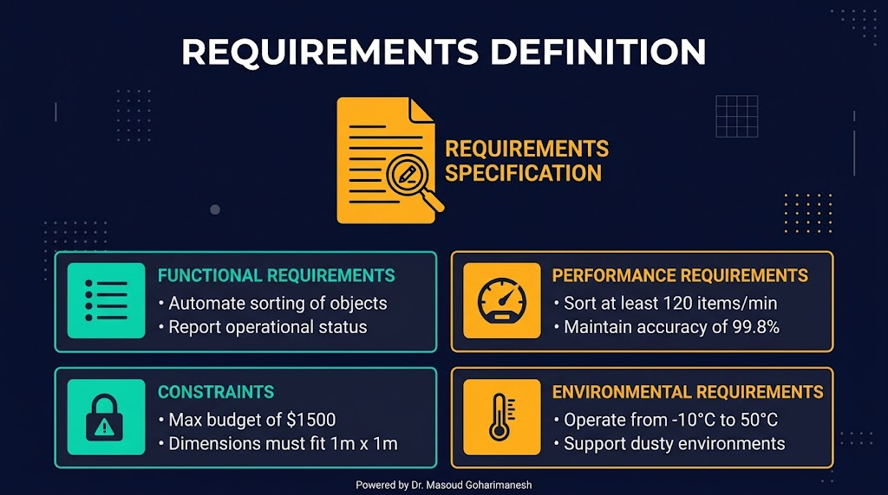
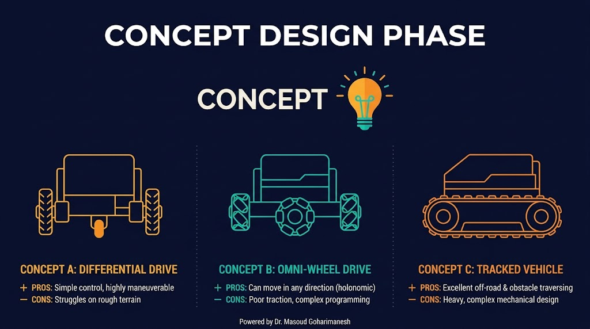
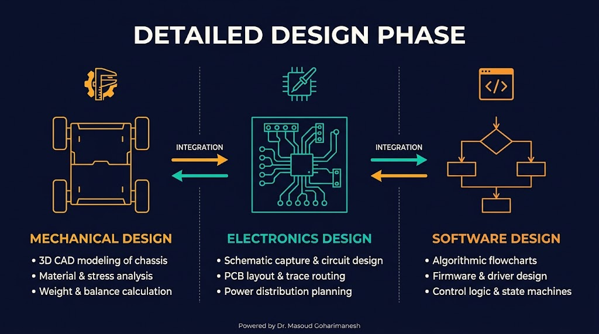
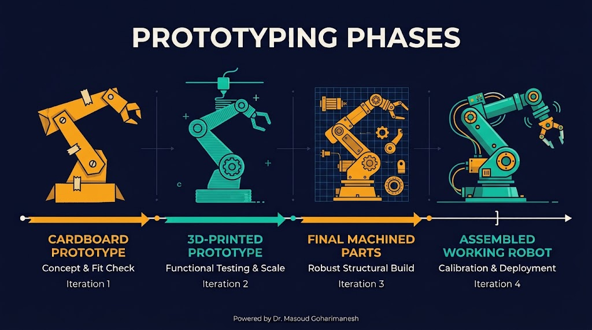
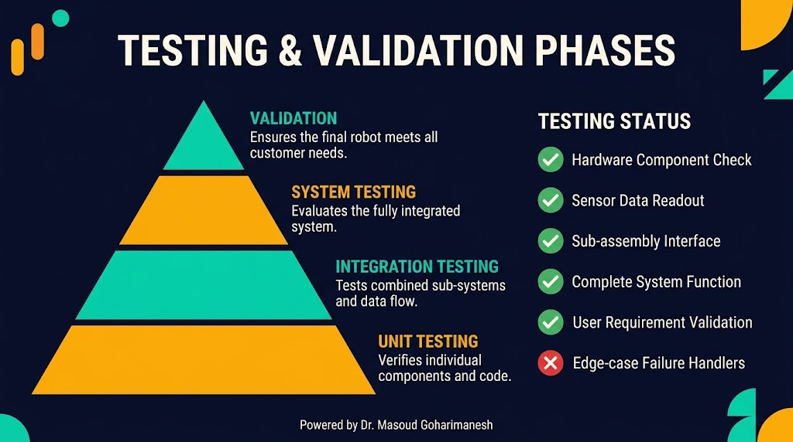
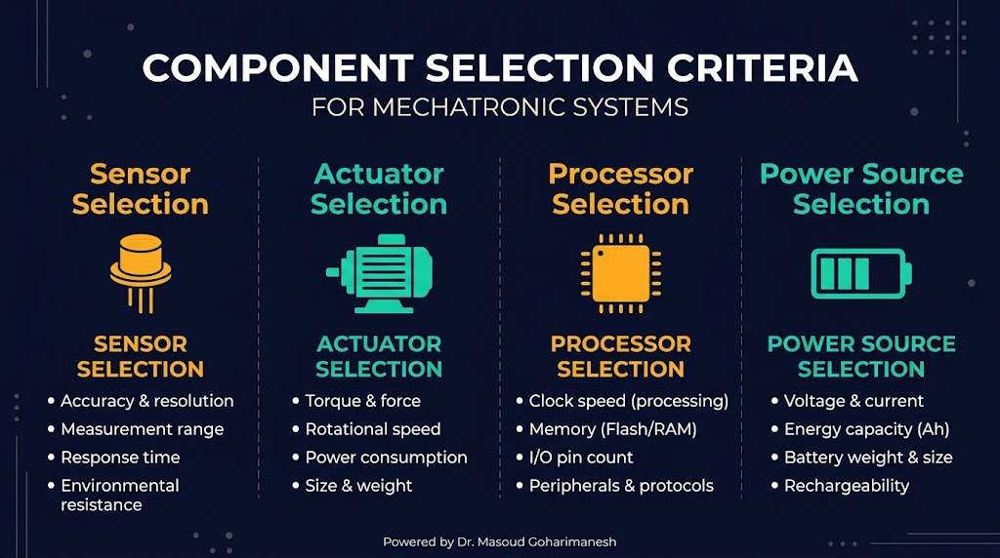

از نیازمندی تا تولید — مدل V
دکتر مسعود گوهریمنش
دانشیار گروه مهندسی مکانیک
دانشگاه تربت حیدریه | پاییز ۱۴۰۵
۷۰٪ شکست پروژههای مکاترونیکی به دلیل طراحی نامناسب است، نه سختافزار!
اگر بخواهید یک ربات متحرک طراحی کنید، از کجا شروع میکنید؟ چه مراحلی را باید طی کنید؟
Mechatronic Design — فراتر از جمع اجزا
طراحی یکپارچه مکاترونیکی رویکردی است که در آن مکانیک، الکترونیک، کنترل و نرمافزار بهصورت همزمان و هماهنگ طراحی میشوند، نه بهصورت جداگانه. این رویکرد باعث کاهش هزینه، زمان توسعه و افزایش کیفیت میشود.
طراحی همه اجزا با هم، نه پشت سر هم
تیمهای مکانیک، الکترونیک و نرمافزار در تعامل مستمر
چرخههای طراحی-تست-بهبود
V-Model — استاندارد طراحی سیستمهای پیچیده
Requirements
System Design
Detailed Design
Unit Testing
Integration Testing
Validation
نکته: هر مرحله در سمت چپ V، با یک مرحله تست در سمت راست متناظر است. این ساختار تضمین میکند که هر نیازمندی در نهایت تست و اعتبارسنجی شود.
Requirements Specification — پایه همه چیز

Conceptual Design — انتخاب رویکرد

نکته مهم: در این مرحله نباید خیلی زود به جزئیات پرداخت. هدف، انتخاب رویکرد کلی است، نه طراحی جزئیات.
Detailed Design — سه حوزه موازی

Implementation & Prototyping — از طرح تا واقعیت

اصل کلیدی: «سریع بشکن، سریع یاد بگیر» — هرچه زودتر پروتوتایپ بسازید، زودتر مشکلات را کشف میکنید.
Testing & Validation — آیا آنچه خواستیم را ساختیم؟

Production & Maintenance — از نمونه تا محصول
طراحی برای تعمیر و نگهداری آسان (Maintainability) — دسترسی به قطعات، عیبیابی، بهروزرسانی نرمافزار.
CAD، شبیهسازی، و ابزارهای نرمافزاری
Arduino IDE (ساده) | PlatformIO (حرفهای) | STM32CubeIDE | VS Code
سنسور، عملگر، پردازنده، منبع تغذیه

برای هر قطعه، معیارها را وزندهی کنید و گزینهها را امتیاز دهید. بهترین گزینه با بالاترین امتیاز انتخاب میشود.
یک مطالعه موردی کامل
چکلیست طراحی سیستم مکاترونیکی
عملکردی، عملکردی، محدودیتها، محیطی
معماری کلی، انتخاب رویکرد، نمودار بلوکی
CAD مکانیک، شماتیک الکترونیک، فلوچارت نرمافزار
پروتوتایپ، ساخت قطعات، مونتاژ
تست واحد، یکپارچگی، سیستم، اعتبارسنجی
DFM، DFA، DFT، مستندسازی
روی هر مرحله کلیک کنید تا آن را تکمیل کنید.
جلسه پانزدهم - طراحی سیستمهای مکاترونیکی
نکات کلیدی جلسه پانزدهم
جلسه بعد: مباحث پیشرفته در مکاترونیک
Powered by Dr. Masoud Goharimanesh